Key Takeaways
- Peer-to-Peer Delivery Allows Windows devices to obtain eligible content from other devices behind the same NAT.
- Background Download Delay Controls the delay before background downloads from HTTP sources begin.
- Content Caching Defines the minimum file size for content to be cached by Delivery Optimization.
- Background QoS Configures the minimum Quality of Service value for background Delivery Optimization activity.
- Download Mode Determines how devices use HTTP and peer-to-peer sources to obtain content.
In this post we are discussing Configure Delivery Optimization Settings to Control Windows Content Downloads using Intune. Delivery Optimization in Windows helps manage how devices download updates, applications, and other Microsoft content by using available delivery sources efficiently. Microsoft Intune provides the Settings Catalog to help administrators configure Windows device settings from a centralized location. The Delivery Optimization category contains settings that control how Windows devices download and share updates, applications.
Table of Contents
Configure Delivery Optimization Settings to Control Windows Content Downloads using Intune
Delivery Optimization can help optimize network bandwidth by allowing devices to obtain eligible content from other devices instead of downloading the same content repeatedly from Microsoft. Administrators can configure download behavior, caching, background download delays, and Quality of Service settings based on organizational requirements.
How to Create a Policy in Intune
To create a policy, the first step that you must do is to sign in to the Microsoft Intune Admin Centre. After clicking on the Device on the left side of the screen, select Configuration and then click Create and select New Policy.
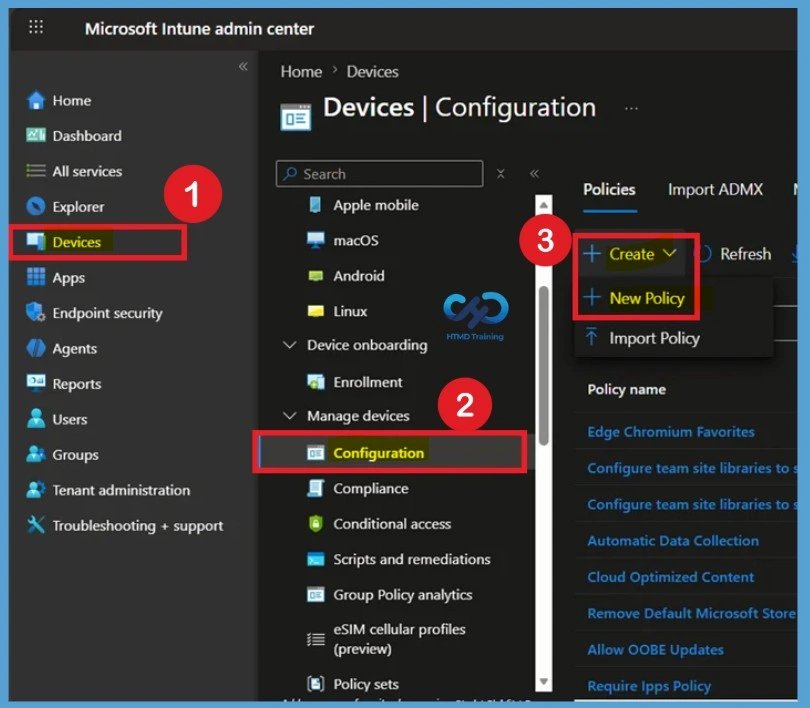
Select Windows 10 and later as the platform and choose Settings catalog as the profile type. Select Create to begin configuring the profile.
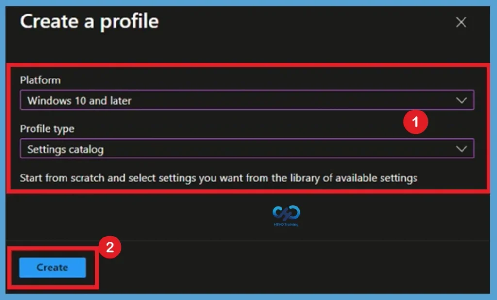
Basics Tab
On the Basics tab, provide a descriptive Name for the configuration profile. For example, you can use Configure Delivery Optimization Settings so that the purpose of the profile is immediately clear to other administrators.
You can also provide a Description explaining what the policy is to configure, such as Delivery Optimization download, caching, and background network behavior. Adding a clear description makes the profile easier to identify and manage when multiple Intune policies exist.
- Here, I added the policy Name as :Configure Delivery Optimization Settings
- Description as: Configure Delivery Optimization settings in Intune to manage Windows content download behavior.
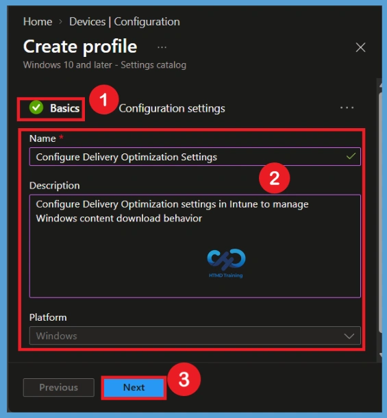
Configuration Settings
After completing basics, you will come to the configuration settings page. Here you have to select the +Add Setting option. Here you will get setting catalog policies. In the Settings picker search box, enter Delivery Optimization. Select the Delivery Optimization category from the search results to display the available settings. Select the settings required for your organization’s configuration.
- Here you can search for the Delivery Optimization
- Select the Policies like DO Min Background Qos,DO Download Mode,
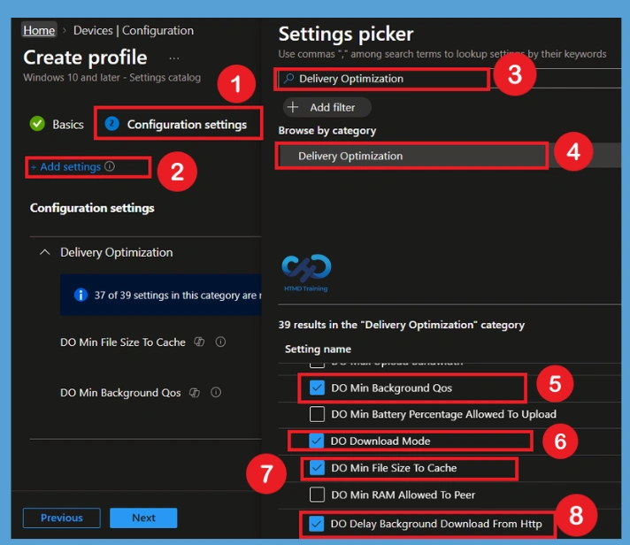
Manage Delivery Optimization Policy
In the Delivery Optimization category, configure settings that control how Windows devices download, cache, and share updates and other Microsoft content. DO Download Mode is set to HTTP blended with peering behind the same NAT, allowing devices to use HTTP downloads along with peer-to-peer sharing between devices behind the same NAT. DO Delay Background Download From HTTP is set to 300 seconds, which delays background downloads from HTTP sources.
- DO Min File Size To Cache is set to 10, defining the minimum file size that Delivery Optimization caches, while DO Min Background QoS is set to 500, controlling the minimum Quality of Service level for background downloads.
- Together, these settings help manage Delivery Optimization behavior and background content delivery on Windows devices.
| Delivery Optimization category | Info |
|---|---|
| DO Download Mode | HTTP blended with peering behind the same NAT |
| DO Delay Background Download From Http | 300 |
| DO Min File Size to Cache | 10 |
| DO Min Background Qos | 500 |
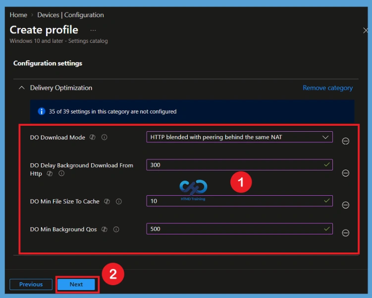
A scope tag in Intune is used to control visibility and access to Intune resources based on administrative roles. Scope tags are not mandatory. You can add the scope tag using the select scope tags button. Here, i select Landon as scope tag. Click Next to continue.

Assignment Groups
The assignments section is used to choose the users or devices that will receive the policy. Add a group by clicking on the Add group button. Here, I selected the HTMD-Test Policy group and HTMD CPC Test group. Review the assignment settings to ensure the correct targets are included and click Next to proceed with the policy deployment
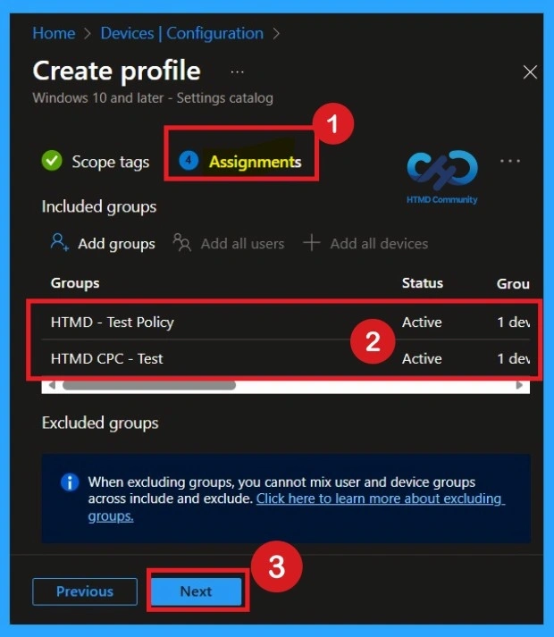
Review and Create the Profile
On the Review + create page, verify the profile name, platform, configuration settings, and assignments. Make sure the Delivery Optimization values match the organization’s intended configuration. Select Create to create the configuration profile. Intune will then deploy the policy to the assigned devices, and administrators can monitor the deployment status to verify that the configuration is applied successfully.
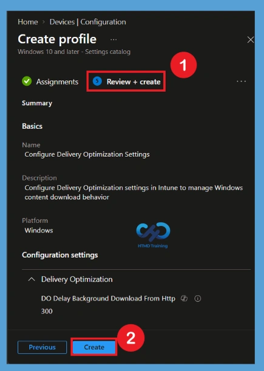
Monitoring Status
The next step is to check the Monitoring status to verify whether the policy has been successfully applied to the selected devices. Here, you can review the deployment status and confirm whether the policy has succeeded for the assigned groups. This helps ensure that the configured Delivery Optimization settings are being applied as expected.
To check the monitoring status, go to Devices in the Intune admin center and search for the policy by its policy name. Select the required policy to open its details, then go to the Properties page. From there, you can view the Monitoring status and check the deployment results for the assigned devices and groups.
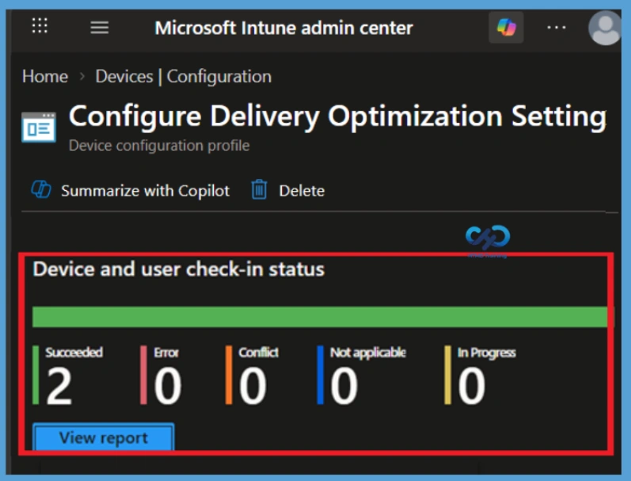
Client-Side Verification
To enable client-side verification, open Event Viewer and navigate to Applications and Services Logs > Microsoft > Windows > Device Management > Enterprise Diagnostic Provider > Admin. Once there, you can search for specific policy results by using the Filter Current Log feature located in the right pane. This helps quickly get the relevant results within the log
| Policy Details |
|---|
| MDM PolicyManaqer: Set policy int, Policy: (DOMinBackgroundQos), Area: (DeliveryOptimization), EnrollmentID requestinq merge: (EB427D85-802F-46D9-A3E2- D5B414587F63), Current User: (Device), Int: (0x1F4), Enrollment Type: (0x6), Scope: (0x0). |
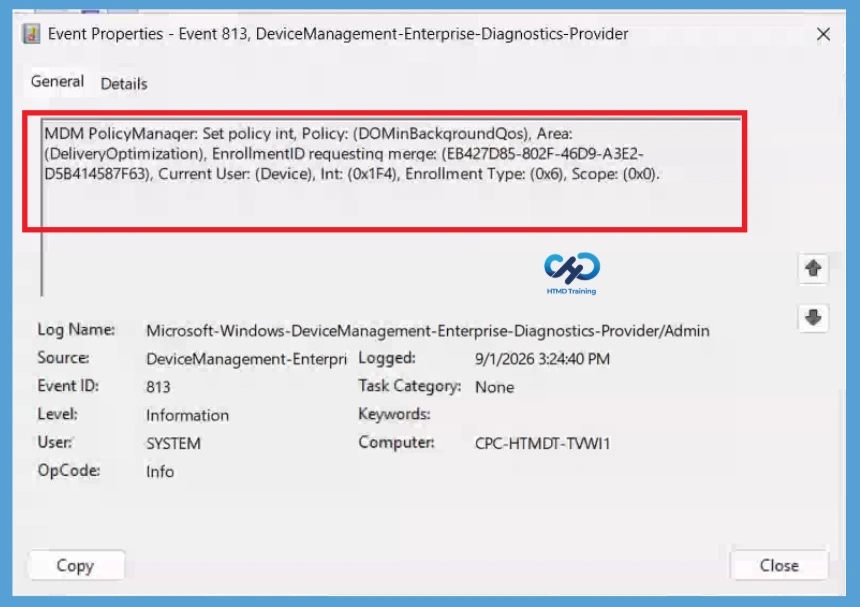
DO Min Background Qos Policy Details
Configure DO Min Background Qos to define the minimum Quality of Service value for background Delivery Optimization activity. In the example, the value is set to 500. MDM PolicyManager: Set policy int, Policy: (DOMinFileSizeToCache), Area:(DeliveryOptimization), EnrollmentID requesting merge: (EB427D85-802F-46D9-A3E2- D5B414587F63), Current User: (Device), Int: (0xA), Enrollment Type: (0x6), Scope: (0x0).
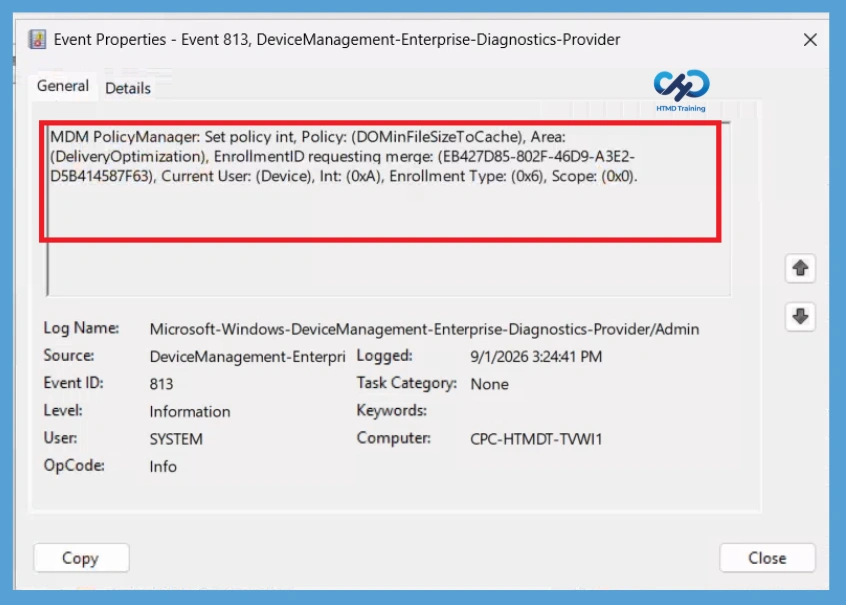
Delete Policy Permanently from Intune Tenant
After creating the policy, if it is no longer required, you can delete the policy permanently from your Intune tenant. To do this, go to Devices > All Devices and search for the policy using its name. In this example, search for Configure Delivery Optimization Settings, which is the name provided in the Basic settings. Select the policy from the search results to open it.
Once you open the policy, locate the 3-dot menu, also known as More options, and click it. From the available options, select Delete and confirm the deletion when prompted. The policy will then be permanently removed from your Intune tenant.
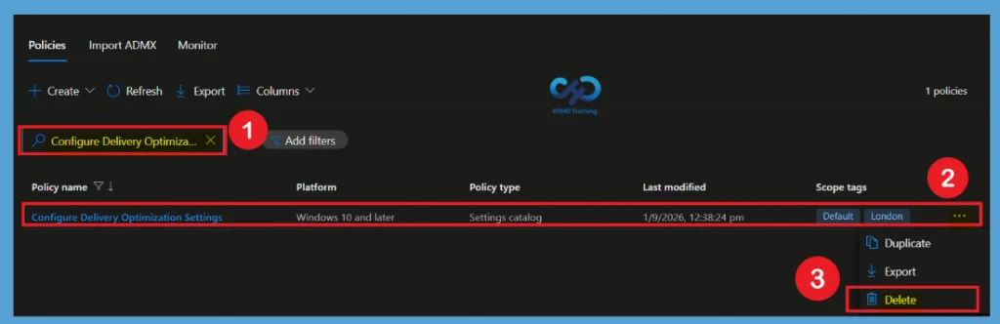
Remove Assigned Group from the Policy
If you want to remove an assigned group from the policy, you can easily do so without deleting the entire policy. In this example, the HTMD Test group is no longer required for the policy configuration, so select the Remove option next to that group. After removing the group, select Review + Save to apply the updated assignment.
To access the Edit profile page, go to Devices in the Intune admin center and search for the policy using its name. Select the required policy from the results, open its Properties, and choose Edit for the profile. From there, you can modify the group assignments, remove the required group, and save the changes.
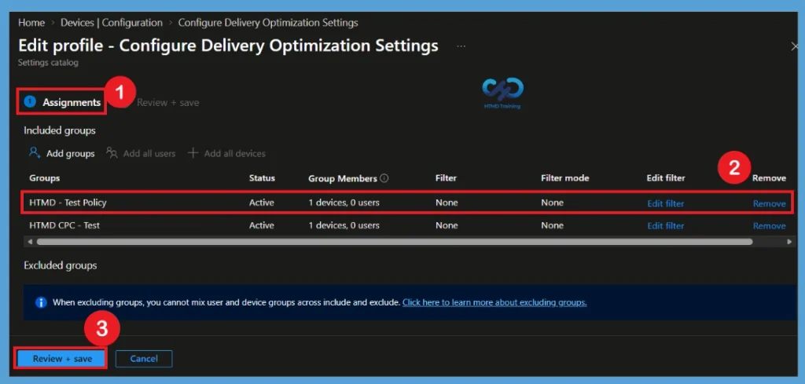
Need Further Assistance or Have Technical Questions?
Join the LinkedIn Page and Telegram group to get the latest step-by-step guides and news updates. Join our Meetup Page to participate in User group meetings. Also, Join the WhatsApp Community and WhatsApp Channel to get the latest news on Microsoft Technologies. We are there on Reddit as well.
Author
Anoop C Nair is Workplace Technology solution architect with 25+ years of experience in global enterprise organizations such as JP Morgan, Capgemini, etc. He is Microsoft Certified Trainer. Microsoft MVP from 2015 onwards for consecutive 11 years! He also conducts Intune and modern workplace tech training for enterprise organizations. He is Blogger, Speaker, and Founder of HTMD Community and HTMD Conference. His focus is on Device Management technologies such as Intune, Windows, Cloud PC. He writes about technologies like Intune, SCCM, Windows, Cloud PC, Windows, Entra, Microsoft Security.